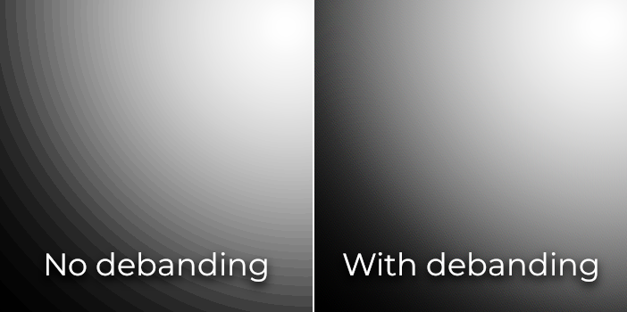
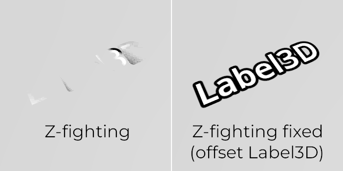

Các giới hạn của kết xuất 3D
Giới thiệu
Do tập trung vào hiệu năng, các engine kết xuất thời gian thực có nhiều giới hạn. Trình kết xuất của Godot cũng không ngoại lệ. Để làm việc hiệu quả với những giới hạn đó, bạn cần hiểu chúng.
Giới hạn kích thước texture
Trên máy tính để bàn và laptop, texture lớn hơn 8192×8192 có thể không được hỗ trợ trên các thiết bị cũ. Bạn có thể kiểm tra giới hạn của GPU mục tiêu trên GPUinfo.org.
GPU di động thường bị giới hạn ở texture 4096×4096. Ngoài ra, một số GPU di động không hỗ trợ lặp lại texture có kích thước không phải lũy thừa của hai. Vì vậy, nếu muốn texture hiển thị đúng trên mọi nền tảng, bạn nên tránh dùng texture lớn hơn 4096×4096 và dùng kích thước lũy thừa của hai nếu texture cần lặp lại.
Để giới hạn kích thước của một texture cụ thể có thể quá lớn để kết xuất, bạn có thể đặt tùy chọn import Process > Size Limit thành một giá trị lớn hơn 0. Việc này sẽ giảm kích thước texture khi import (giữ nguyên tỷ lệ khung hình) mà không ảnh hưởng tới tệp nguồn.
Hiện tượng phân dải màu (color banding)
Khi dùng phương thức kết xuất Forward+ hoặc Mobile, engine 3D của Godot kết xuất nội bộ ở HDR. Tuy nhiên, đầu ra kết xuất thường sẽ được ghi vào một buffer có độ chính xác thấp hơn. Điều này có thể gây ra hiện tượng phân dải màu dễ thấy, đặc biệt khi dùng material không có texture. Vì lý do hiệu năng, độ chính xác màu cũng thấp hơn khi dùng phương thức kết xuất Mobile so với Forward+.
Khi dùng phương thức kết xuất Compatibility, kết xuất HDR nội bộ không được sử dụng và độ chính xác màu là thấp nhất trong tất cả các phương thức kết xuất. Điều này cũng áp dụng cho kết xuất 2D, nơi hiện tượng phân dải màu có thể thấy rõ khi dùng texture dải màu chuyển mượt.
Có hai cách chính để giảm hiện tượng phân dải màu:
Nếu dùng phương thức kết xuất Forward+ hoặc Forward Mobile, hãy bật Use Debanding trong Project Settings > Rendering > Anti Aliasing. Tùy chọn này áp dụng một shader khử phân dải toàn màn hình như một hiệu ứng hậu xử lý và rất ít tốn kém.
Ngoài ra, hãy bake một ít nhiễu vào texture của bạn. Cách này chủ yếu hiệu quả trong 2D, ví dụ cho hiệu ứng vignette. Trong 3D, bạn cũng có thể dùng một shader khử phân dải tùy chỉnh để áp dụng lên các material của mình. Kỹ thuật này hoạt động ngay cả khi dự án được kết xuất với độ chính xác màu thấp, nghĩa là nó sẽ hoạt động khi dùng phương thức kết xuất Mobile và Compatibility.

So sánh hiện tượng phân dải màu (tăng độ tương phản để dễ thấy hơn)
Xem thêm
Xem Banding in Games: A Noisy Rant (PDF) để biết thêm chi tiết về hiện tượng phân dải màu và các cách khắc phục.
Độ chính xác của depth buffer
Để sắp xếp các đối tượng trong không gian 3D, các engine kết xuất dựa vào depth buffer (còn gọi là Z-buffer). Buffer này có độ chính xác hữu hạn: 32-bit trên nền tảng desktop, 24-bit trên nền tảng di động (vì lý do hiệu năng). Nếu hai đối tượng khác nhau có cùng giá trị trong buffer, hiện tượng Z-fighting sẽ xảy ra. Hiện tượng này biểu hiện qua việc texture nhấp nháy qua lại khi camera di chuyển hoặc xoay.
Để depth buffer chính xác hơn trên vùng được kết xuất, bạn nên tăng thuộc tính Near của node Camera. Tuy nhiên, hãy cẩn thận: nếu đặt quá cao, người chơi sẽ có thể nhìn xuyên qua hình học ở gần. Bạn cũng nên giảm thuộc tính Far của node Camera xuống giá trị thấp nhất cho phép với trường hợp sử dụng của mình, nhưng lưu ý rằng nó không ảnh hưởng đến độ chính xác nhiều bằng thuộc tính Near.
Nếu bạn chỉ cần độ chính xác cao khi người chơi có thể nhìn xa, bạn có thể thay đổi nó một cách động dựa trên điều kiện trong game. Ví dụ, nếu người chơi lên máy bay, thuộc tính Near có thể được tăng tạm thời để tránh Z-fighting ở xa. Sau đó có thể giảm lại khi người chơi rời máy bay.
Tùy thuộc vào cảnh và điều kiện quan sát, bạn cũng có thể dịch các đối tượng bị Z-fighting ra xa nhau hơn mà người chơi không nhận thấy sự khác biệt.

So sánh Z-fighting (trước và sau khi chỉnh cảnh bằng cách dịch Label3D ra khỏi sàn)
Sắp xếp độ trong suốt
Trong Godot, material trong suốt được vẽ sau material đục. Các đối tượng trong suốt được sắp xếp từ sau ra trước trước khi vẽ dựa trên vị trí của Node3D, chứ không phải vị trí đỉnh (vertex) trong không gian thế giới. Vì vậy, các đối tượng chồng lên nhau thường có thể bị sắp xếp sai thứ tự. Để sửa các đối tượng bị sắp xếp sai, hãy chỉnh thuộc tính Render Priority của material hoặc Sorting Offset của node. Render Priority sẽ buộc các material cụ thể xuất hiện phía trước hoặc phía sau các material trong suốt khác, còn Sorting Offset sẽ dịch đối tượng về phía trước hoặc phía sau cho mục đích sắp xếp. Dù vậy, những cách này không phải lúc nào cũng đủ.
Các đối tượng trong suốt không được kết xuất vào normal-roughness buffer, vì chúng được vẽ sau hình học đục. Do đó, các tính năng dựa vào normal-roughness buffer sẽ không ảnh hưởng tới material trong suốt.
Một số engine kết xuất có các kỹ thuật trong suốt không phụ thuộc thứ tự (order-independent transparency) để giảm thiểu vấn đề này, nhưng chúng tốn kém cho GPU. Hiện tại Godot chưa cung cấp tính năng này. Vẫn có một số cách để tránh vấn đề này:
Chỉ làm material trong suốt khi thực sự cần. Nếu một material chỉ có một phần nhỏ trong suốt, hãy cân nhắc tách phần đó thành một material riêng. Việc này cho phép phần đục đổ bóng và cũng cải thiện hiệu năng.
Nếu texture của bạn chủ yếu có các vùng hoàn toàn đục và hoàn toàn trong suốt, bạn có thể dùng alpha testing thay vì alpha blending. Chế độ trong suốt này kết xuất nhanh hơn và không gặp các vấn đề về độ trong suốt. Đặt Transparency > Transparency thành Alpha Scissor trong StandardMaterial3D, và điều chỉnh Transparency > Alpha Scissor Threshold cho phù hợp nếu cần. Lưu ý rằng MSAA sẽ không khử răng cưa các cạnh của texture trừ khi alpha antialiasing được bật trong thuộc tính của material. Tuy nhiên, FXAA, TAA và supersampling vẫn có thể khử răng cưa các cạnh của texture bất kể alpha antialiasing có được bật trên material hay không.
Nếu bạn cần kết xuất các vùng bán trong suốt của texture, alpha scissor không phù hợp. Thay vào đó, đặt thuộc tính Transparency > Transparency của StandardMaterial3D thành Depth Pre-Pass đôi khi có thể hiệu quả (đổi lại tốn hiệu năng). Bạn cũng có thể thử chế độ Alpha Hash.
Nếu bạn muốn material mờ dần theo khoảng cách, hãy dùng chế độ distance fade Pixel Dither hoặc Object Dither của StandardMaterial3D thay vì Pixel Alpha. Việc này sẽ làm material trở nên đục, đồng thời tăng tốc độ kết xuất.

So sánh sắp xếp độ trong suốt (material alpha-blended ở bên trái, material alpha scissor ở bên phải)